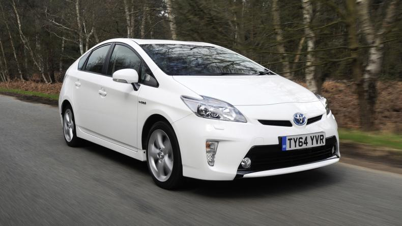
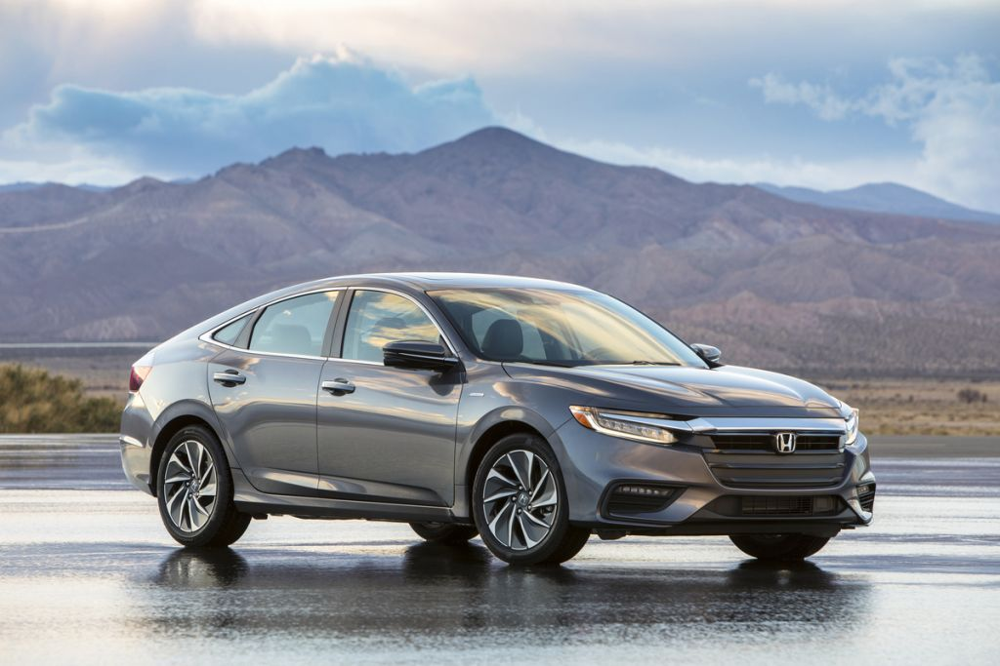
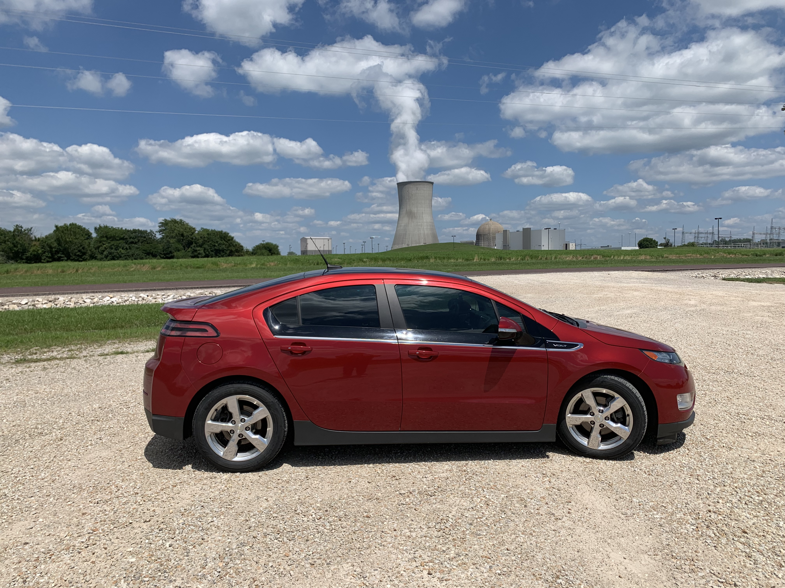
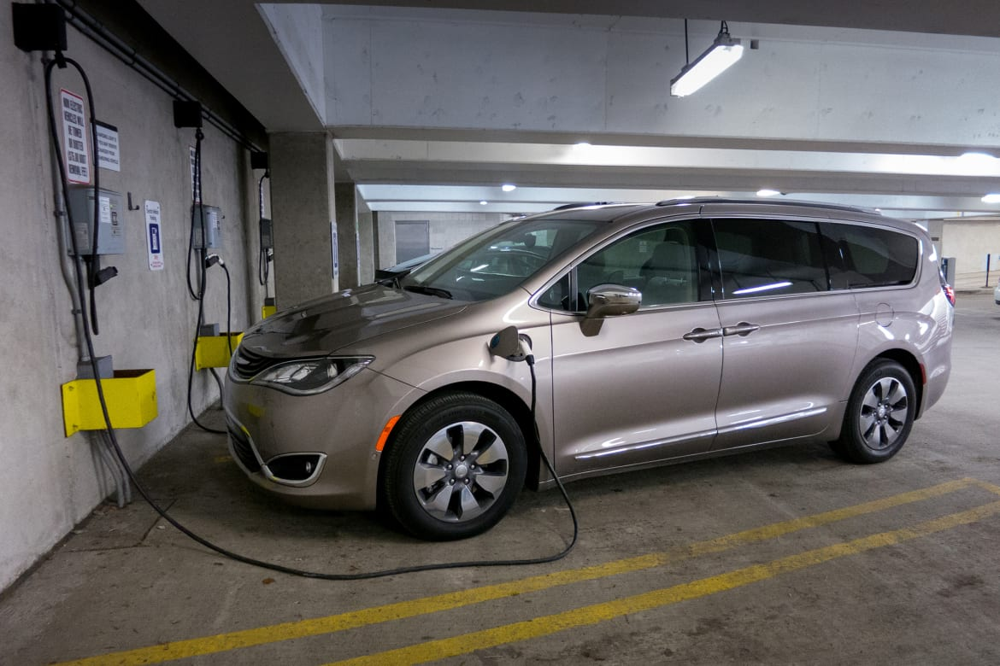
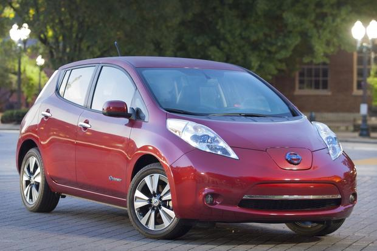
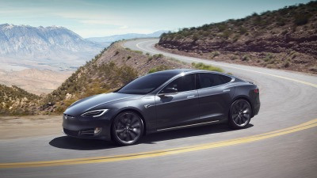

HEV
A hybrid electric vehicle (HEV) is a type of
hybrid vehicle that combines a conventional internal combustion
engine (ICE) system with an electric propulsion system (hybrid vehicle drivetrain).
The presence of the electric powertrain is intended to achieve
either better fuel economy than a conventional vehicle or better
performance. There is a variety of HEV types, and the degree to
which each functions as an electric vehicle (EV) also varies.
The most common form of HEV is the hybrid electric car, although
hybrid electric trucks (pickups and tractors) and buses also exist.

Modern HEVs make use of efficiency-improving technologies such as
regenerative brakes which convert the vehicle's kinetic energy to
electric energy, which is stored in a battery or supercapacitor.
Some varieties of HEV use an internal combustion engine to turn an
electrical generator, which either recharges the vehicle's batteries
or directly powers its electric drive motors; this combination is
known as a motor–generator. Many HEVs reduce idle emissions by shutting
down the engine at idle and restarting it when needed; this is known as
a start-stop system. A hybrid-electric produces less tailpipe emissions
than a comparably sized gasoline car, since the hybrid's gasoline
engine is usually smaller than that of a gasoline-powered vehicle.
If the engine is not used to drive the car directly, it can be geared
to run at maximum efficiency, further improving fuel economy.

Types of Powertrains:
In parallel hybrids, the ICE and the electric motor are both connected to
the mechanical transmission and can simultaneously transmit power to drive
the wheels, usually through a conventional transmission. Honda's Integrated
Motor Assist (IMA) system as found in the Insight, Civic, Accord, as well
as the GM Belted Alternator/Starter (BAS Hybrid) system found in the Chevrolet
Malibu hybrids are examples of production parallel hybrids. The internal
combustion engine of many parallel hybrids can also act as a generator for
supplemental recharging. As of 2013, commercialized parallel hybrids use a full
size combustion engine with a single, small (less than 20 kW) electric motor and
small battery pack as the electric motor is designed to supplement the main engine,
not to be the sole source of motive power from launch. But after 2015 parallel
hybrids with over 50 kW are available, enabling electric driving at moderate
acceleration. Parallel hybrids are more efficient than comparable non-hybrid
vehicles especially during urban stop-and-go conditions where the electric motor
is permitted to contribute, and during highway operation.
In series hybrids, only the electric motor drives the drivetrain, and a smaller
ICE (also called range extender) works as a generator to power the electric motor
or to recharge the batteries. They also usually have a larger battery pack than
parallel hybrids, making them more expensive. Once the batteries are low, the small
combustion engine can generate power at its optimum settings at all times, making
them more efficient in extensive city driving.
Power-split hybrids have the benefits of a combination of series and parallel
characteristics. As a result, they are more efficient overall, because series
hybrids tend to be more efficient at lower speeds and parallel tend to be more
efficient at high speeds; however, the cost of power-split hybrid is higher than
a pure parallel. Examples of power-split
hybrid powertrains include 2007 models of Ford, General Motors, Lexus, Nissan,
and Toyota.
PHEV
A plug-in hybrid electric vehicle (PHEV) is a hybrid electric vehicle whose battery
can be recharged by plugging it into an external source of electric power, as well
by its on-board engine and generator. Most PHEVs are passenger cars, but there are
also PHEV versions of commercial vehicles and vans, utility trucks, buses, trains,
motorcycles, scooters, and military vehicles.
Similarly to all-electric vehicles, plug-in hybrids displace emissions from the car
tailpipe to the generators powering the electricity grid. These generators may be
renewable, or may have lower emission than an internal combustion engine.
Charging the battery from the grid can cost less than using the on-board engine, helping to
reduce operating cost.
Mass-produced plug-in hybrids were available to the public in China and the United
States in 2010. By the end of 2017, there were over 40 models of series-
production highway legal plug-in hybrids for retail sales. Plug-in hybrid cars are
available mainly in the United States, Canada, Western Europe, Japan, and China.
The top-selling models are the Mitsubishi Outlander P-HEV, the Chevrolet Volt family,
and the Toyota Prius PHV.
As of December 2018, the global stock of plug-in hybrid cars totaled 1.8 million units,
out of 5.1 million plug-in electric passenger cars on the world roads at the end of 2018.
As of December 2017, the United States ranked as the world's largest plug-in
hybrid car market with a stock of 360,510 units, followed by China with 276,580
vehicles, and Japan with 100,860 units.
PHEVs are based on the same three basic powertrain architectures of conventional hybrids;
a series hybrid is propelled by electric motors only, a parallel hybrid is propelled both
by its engine and by electric motors operating concurrently, and a series-parallel hybrid
operates in either mode. While a plain hybrid vehicle charges its battery from its engine
only, a plug-in hybrid can obtain a significant amount of the energy required to recharge
its battery from external sources.
The extra battery capacity of the plug-in hybrid is the key to reaping the benefits of the PHEV
configuration. On a conventional hybrid car, that kind of extra capacity is out of reach. The
car never fully charges except on long freeway trips. By adding the plug in jack with the extra
battery, the PHEV has the ability to use its extra capacity by running on all-electric mode for
an extended range (30 miles or more). That means that instead of burning gasoline, the car uses
electrical energy (which is much cheaper). Since most trips are less than 30 miles, that means
the vehicle can operate in-town without ever using a drop of gasoline. Beyond just the economic
savings of using a cheaper energy source, PHEVs drastically reduce harmful emissions and also
help to reduce our country's dependence on foreign oil. As with most new technologies, there are
some advantages and disadvantages that prospective buyers should be aware of.
Plug in hybrid batteries do cost more than normal hybrid batteries. They are powerful lithium
ion batteries but with that power comes added cost. Up front, it can be a few thousand extra.
However, in time the batteries pay for themselves, and then save you money by using cheap
electricity compared to expensive gasoline. These batteries do have less range in them as a
whole. The plug in hybrid is much tougher on the battery, causing fewer cycles for the battery's
lifespan.
BEV
Battery Electric Vehicles, also called BEVs, and more frequently called EVs, are fully-electric
vehicles with rechargeable batteries and no gasoline engine. Battery electric vehicles store
electricity onboard with high-capacity battery packs. Their battery power is used to run the
electric motor and all onboard electronics. BEVs do not emit any harmful emissions and hazards
caused by traditional gasoline-powered vehicles. BEVs are charged by electricity from an
external source. Electric Vehicle (EV) chargers are classified according to the speed with
which they recharge an EVs battery.

The classifications are Level 1, Level 2, and Level 3 or DC fast charging. Level 1 EV charging
uses a standard household (120v) outlet to plug into the electric vehicle and takes over 8
hours to charge an EV for approximately 75-80 miles. Level one charging is typically done at
home or at your workplace. Level 1 chargers have the capability to charge most EVs on the market.
Level 2 charging requires a specialized station which provides power at 240v. Level 2 chargers
are typically found at workplaces and public charging stations and will take about 4 hours to
charge a battery to 75-80 miles of range.
Level 3 charging, DC fast charging, or simply fast charging is currently the fastest charging
solution in the EV market. DC fast chargers are found at dedicated EV charging stations and
charge a battery up to 90 miles range in approximately 30 minutes.
As of April 2018, the world's top selling highway legal all-electric car in history is
the Nissan Leaf with global sales of over 300,000 units, followed by the Tesla Model S
with more than 200,000 units delivered worldwide.
The biggest benefit of electric cars is obvious: You no longer need gas. That's a big deal,
since the average American spends between $2,000 and $4,000 on gas every year. With fully electric
cars such as the Nissan Leaf, that cost is eliminated -- though electricity isn't free. A plug-in
hybrid eliminates a major portion of your gas bill, as well, but it still uses an engine
as a range extender.
Beyond the fuel-saving benefit, EVs offer another major cost savings: maintenance. Since an EV
is fully electric, it no longer uses oil to lubricate the engine. That means oil changes are a
thing of the past. The same is true for a lot of other expensive engine work that could afflict
a gas-powered car. Brakes won't wear as quickly, either, so you won't need to replace pads as
often as you do on a normal car.
The main disadvantages of electric car ownership concern range anxiety: the fear you'll run
out of juice when you're nowhere near a charging station. Indeed, both the Ford Focus Electric
and Nissan Leaf offer a range of approximately 75 miles. For most drivers, that's more than enough
to get around -- but many will require a second car, if only to calm their nerves. With that said,
modern battery technology is advancing daily. Now it's possible to find models of EVs that can go
200-300 miles per charge and most have DC quick charging options that can add 150 miles of range
in less than 30 minutes. Tesla also has supercharging options that claim to be able to add 75 miles of
range in 5 minutes.
Another big disadvantage is that many drivers will have to install a charging station at home.
It's not necessary, however, as you can simply charge your EV at work or at various public charging
stations. But most shoppers will want a charging station at home, cutting into the cost savings from
owning an EV in the first place.